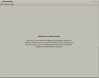
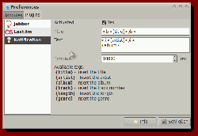
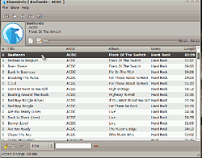
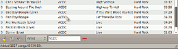

Bluemindo
Dieser Artikel wurde für die folgenden Ubuntu-Versionen getestet:
Ubuntu 14.04 Trusty Tahr
Zum Verständnis dieses Artikels sind folgende Seiten hilfreich:
Bluemindo  ist ein in Python programmierter Audioplayer. Er verfolgt einen einfachen, minimalistischen Ansatz. So kann Bluemindo auch unter KDE betrieben werden. Der Player bietet die Schnittstelle für den mit Web-2.0-Informationen angereicherten Musikgenuss.
ist ein in Python programmierter Audioplayer. Er verfolgt einen einfachen, minimalistischen Ansatz. So kann Bluemindo auch unter KDE betrieben werden. Der Player bietet die Schnittstelle für den mit Web-2.0-Informationen angereicherten Musikgenuss.
Seit 2009 stagniert die Weiterentwicklung. Merkwürdiges Verhalten kann also nicht restlos ausgeschlossen werden. Auch ein Übersetzer für eine deutsche Oberfläche wird noch gesucht.
Installation¶
Bluemindo ist bis Trusty einschliesslich in den offiziellen Paketquellen enthalten. Es muss lediglich das folgende Paket installiert [1] werden:
bluemindo (universe)
 mit apturl
mit apturl
Paketliste zum Kopieren:
sudo apt-get install bluemindo
sudo aptitude install bluemindo
Nach erfolgreicher Installation findet sich der Player unter
"Anwendungen -> Unterhaltungsmedien -> Bluemindo" (GNOME)
"Anwendungen -> Multimedia -> Bluemindo" (Xfce)

Konfiguration¶
Startet man Bluemindo das erste Mal, ist das Ergebnis noch etwas ernüchternd. Lediglich eine Mitteilungsbox erscheint, die darauf hinweist, dass noch kein "root music directory" eingerichtet worden ist. Dafür muss nun zunächst über "File -> Einstellungen" der passende "Musik-Ordner" aus dem Homeverzeichnis ausgewählt werden. Danach muss man in älteren Version Bluemindo noch beenden und erneut starten.
Einstellungen¶
Unter Einstellungen präsentiert Bluemindo zwei Reiter: "Modules" und "Plugins". Über Modules lässt sich unter "Explorer -> Folder" der von Bluemindo gewünschte Musikordner auswählen. Bluemindo hatte in früheren Versionen Probleme mit größeren Musiksammlungen. Dann sollte man darauf verzichten, die Option "Scan at startup -> Yes" auszuwählen.

Unter "Lyrics" lässt sich sowohl die Anzeige von Liedtexten regeln als auch die Quelle auswählen, aus der diese "Lyrics" bezogen werden sollen. Das Aussehen und das Verhalten des Players lässt sich einstellen, ebenso kann man ein Jabber-Konto oder ein LastFM-Konto mit Bluemindo verknüpfen. Letztlich kann man auch die Benachrichtigungen noch bis ins Detail einstellen.
Sämtliche Einstellungen können auch mit einem Texteditor [4] über die Konfigurationsdateien unter ~/.config/bluemindo bearbeitet werden. Zusätzlich zu den Einstellungen, die über die GUI erreichbar sind, kann über die zentrale Konfigurationsdatei ~/.config/bluemindo/Bluemindo.cfg im Homeverzeichnis die Größe und Position des Programmfensters bzw. der Lautstärke von Bluemindo geregelt werden.
Benachrichtigungsdienst¶
Bluemindo benutzt den Ubuntu-eigenen Benachrichtigungsdienst ("notification daemon"). Weiter können hier noch Informationen zu:
Titel
Künstler
Album
Track-Nummer
Liedlänge und
Genre
angegeben werden.

Bedienung¶
Jetzt ist man endlich soweit und kann Bluemindo neu starten. Dabei ist zu beachten, dass Bluemindo immer auch in den Systemtray startet und deshalb entweder über "File -> Beenden" oder über  auf das "Symbol im Systemtray -> Beenden" abgeschaltet werden muss.
auf das "Symbol im Systemtray -> Beenden" abgeschaltet werden muss.
Hinweis:
Die Bedienung des Players über das Trayicon ist nicht ganz einfach. Mittels gedrückt gehaltener kann der gewünschte Eintrag ausgewählt werden. Darüber hinaus ist zu beachten, dass die Desktop-Oberfläche Unity kein Symbol im Benachrichtigungsfeld unterstützt.
Musiksammlung erfassen¶
Als erstes sollte man auf "File -> Aktualisieren" klicken. Damit wird die eigene Musiksammlung erfasst. Anschließend klickt man auf ein beliebiges Musikstück, Album oder Künstler und startet die Wiedergabe.
Wiedergabe¶
Normalerweise wird beim Start die gesamte Musiksammlung in den Player geladen. Die geladene Musiksammlung kann dann über das Suchfeld unterhalb der Playliste sortiert bzw. nach Künstler (Artist), Titel und Album durchsucht werden. Ebenfalls in der Leiste unter der Playliste kann auch eingestellt werden, ob die Abspielreihenfolge der Wiedergabeliste folgen oder eine zufällige Wiedergabe generiert werden soll.
Zuletzt können über "File -> Load a playlist" schon bestehende Playlisten importiert und abgespielt werden.
Mehrere Instanzen¶
Eine wirklich interessante Eigenschaft an Bluemindo ist, dass der Player beliebig oft nebeneinander gestartet werden kann (abhängig von den Ressourcen des eigenen Rechners). Man kann damit recht interessante Effekte erzielen, indem beispielsweise die Wiedergabe von U2 mit AC/DC überlagert wird. Dieses Beispiel ergibt zwar eine grauenhafte Kombination – für den Privat-DJ könnte Bluemindo damit aber zur neuen Lieblingsapplikation werden.
Ab der Version 0.3 lässt sich Bluemindo immer noch in mehreren Instanzen starten. Allerdings erscheint nun die Mitteilung, dass dies nicht vorgesehen ist und die Funktion des Players beeinträchtigen könnte.
Links¶
Downloadseite
der aktuellen Versionbekannte Bugs
auf launchpad.net
AudioPlayer
 Übersichtsartikel
Übersichtsartikel
- Erstellt mit Inyoka
-
 2004 – 2017 ubuntuusers.de • Einige Rechte vorbehalten
2004 – 2017 ubuntuusers.de • Einige Rechte vorbehalten
Lizenz • Kontakt • Datenschutz • Impressum • Serverstatus -
Serverhousing gespendet von